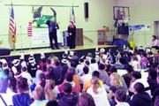

About Me
Dean Alan - One of the Best Northern Virginia Magicians
Dean Alan is one of the best Northern Virginia magicians who performs regularly in

Maryland, D.C. and all over the Mid-Atlantic Region. He’s performed at schools, private functions, fairs and festivals, television, country clubs, recreational centers, theaters and even the White House on numerous occasions. 
His interest in magic began many years ago when he saw the Tony Curtis movie about Harry Houdini. Only days after seeing the movie he went to the library and began to check out books on magic and magicians. Shortly after this interest began, he and his family moved to a horse farm in the country. With no neighbors nearby, it gave plenty of time to practice and learn magic. Before long he was doing shows at his high school, at fairs and festivals and special events.
After high school Dean was sidetracked with a ‘real job’. It was never his intention to do anything other than magic, but the reality of a regular paycheck was hard to resist. After 12 years, enough was enough and he left his ‘real job’ for an ‘unreal job’. That was 20 years ago and he has never looked back once.
Dean is a graduate of the Chavez College of Magic. He is a past president of the Society of American Magicians Assembly 252, and past regional vice president for the national Society of American Magicians.
As the Wizard of Reading, he tours across the mid-atlantic region with his school

Besides performing Dean Writes a bi-monthly column for the Kid-Abra Journal called ‘All Things Magical’. He has also co-written two books on escape artistry and is in the process of finishing his first children’s book. Dean is also the author of a new book on Houdini that he hopes to debut in 2015. He is the creator of the highly popular magic history blog called The Magic Detective.com
Besides performing, Dean enjoys painting. Dean’s artwork has appeared in four different magazines and has been featured on the covers of ‘Elan Magazine’ and ‘MAGIC Magazine’. You can see examples of his art at ArtistofMystery.com